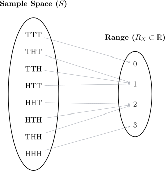

2.1 Random Variables
Definition 2.1.1. A random variable denoted by \(X\) is a function whose value is a real number determined by each element in the sample space. \[X:S\longrightarrow \mathbb {R}\] \(S\) is the domain of \(X\), \(\, \mathbb {R}_X\) is the range (space of the random variable \(X\)) which is the subset of \(\mathbb {R}\).
Note: A random variable is neither random nor variable, it is simply a function. The values it takes on are both random and variable.
Example 2.1.2. Consider tossing a fair coin three times. The sample space \(S\) contains 8 outcomes. If we define \(X\) as the number of heads, the random variable maps each sequence to an integer:

Example 2.1.3. In industrial monitoring, such as that performed by the Environmental Council of Zambia (ECZ), the nature of the data determines the classification of the variable.
- Pesticide Concentration (\(X\)):If we measure the mass of pesticide in milligrams per liter, \(X\) can take any value in a continuous interval. Then the range is \[R_X = \{x \in \mathbb {R} : x \geq 0\},\] and the data type is continuous (uncountably infinite outcomes).
- Monthly Compliance (\(X\)):If we count the number of months until a company fails an inspection, \(X\) can be any whole number.The range is \[R_X = \{0, 1, 2, 3, \dots \},\] and the data type is discrete (countably infinite outcomes).
Note 2.1.4. In practice, we use \(X\) (uppercase) to refer to the name of the variable and \(x\) (lowercase) to refer to a specific value it might take.
Questions on this section
Stuck on something here? Ask below and it stays attached to this topic.
Discussion will be enabled when the site goes live.